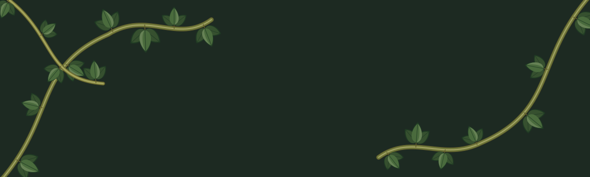
A brand kit grown from the hand-painted mark — a classic serif K with kudzu taking it over. Vines as the visual argument for Southern art.
A refined serif K overgrown by kudzu, concentrated at the lower-left exactly as the original painting. Two finishes: a clean vector mark for everyday use and the refined painterly version for hero and feature moments.
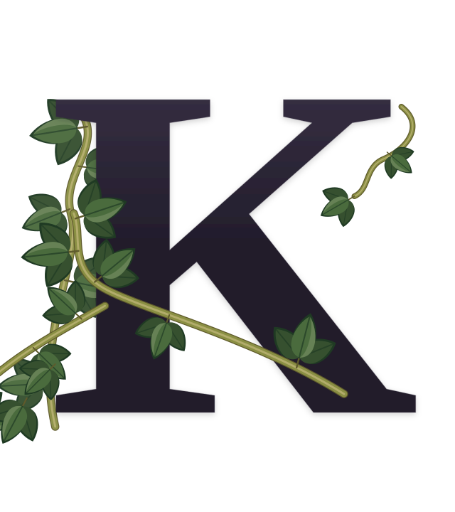
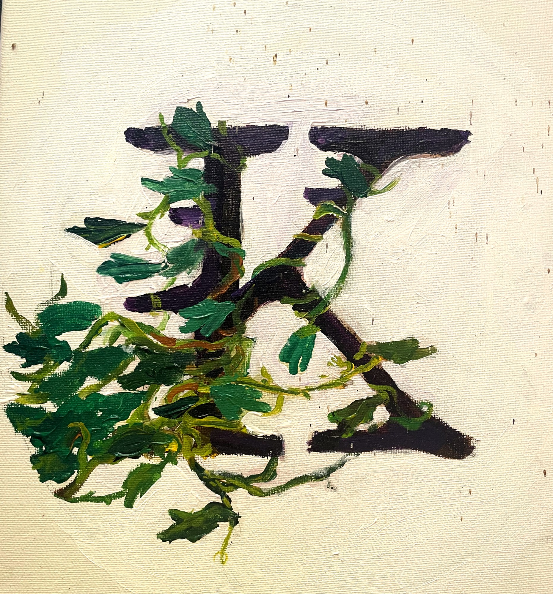
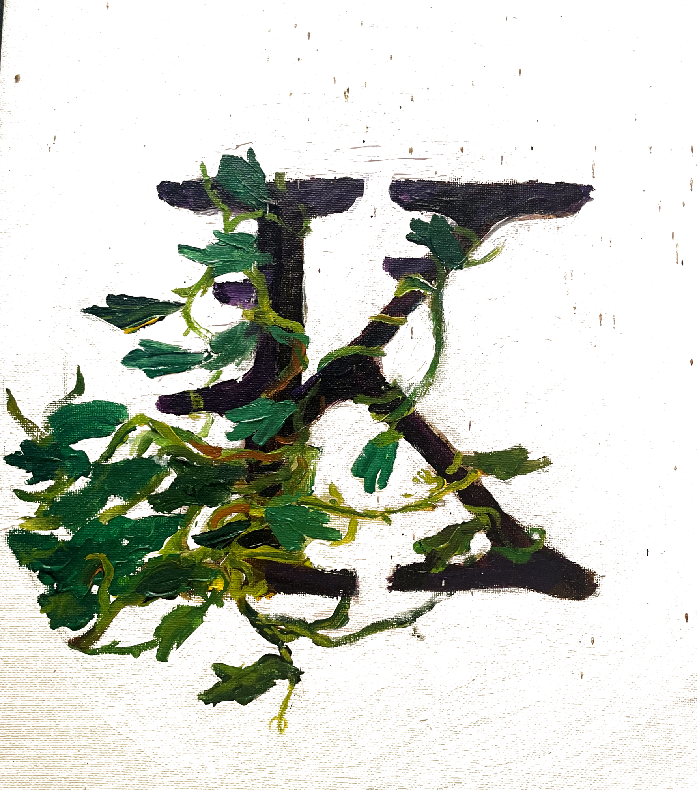
Stacked for vertical spaces and avatars; horizontal for headers and letterhead.
Sampled directly from the painting and reconciled with the existing site tokens — aubergine-black, layered leaf greens, olive-gold vine, on warm cream.
Kudzu's trifoliate leaf as a standalone motif, a tumbling sprig for spot illustration, and small leaflet bullets for lists.
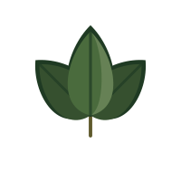
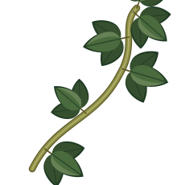
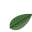
Advisory & collection strategy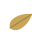
Curation & exhibition designTrailing-vine section dividers, a leaf-tipped rule, a single corner ornament, and a four-corner frame for featured pieces.
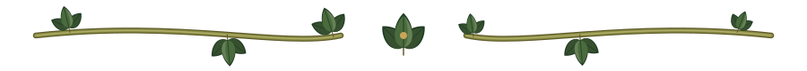
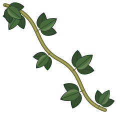
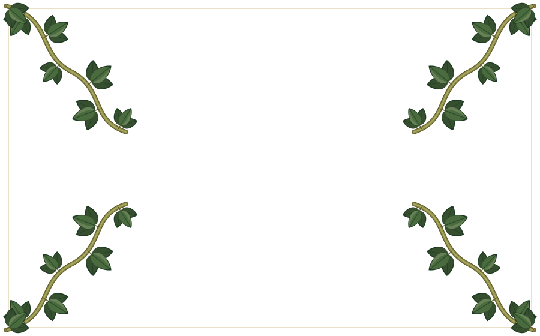
Seamless tone-on-tone tiles, faint vine watermarks for hero corners, and the wide creeping band used at the top of this page.
A simplified K-and-vine for browser tabs and devices — legible down to 16px. Rounded for app tiles, square for raster favicons, plus a forest variant.
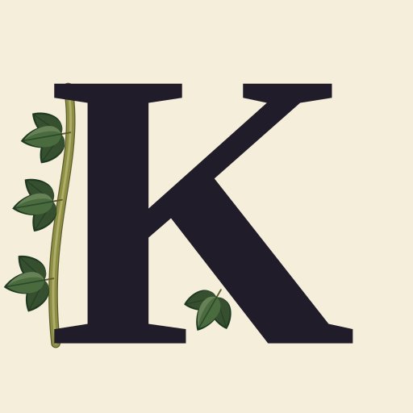
Also exported: favicon.ico (16/32/48), icon-192.png, icon-512.png.